Platform, formerly Wonderware System Platform, is an industrial software platform built on ArchestrA technology. It contains an integrated set of services and an extensible data model to manage plant control and information management systems. System Platform supports both the supervisory control layer and the manufacturing execution system layer, presenting them as a single information source. System Platform and its clients provide the framework and tools for developing, executing, monitoring, and visualizing your applications. Services such as data acquisition, historization, and alarming are provided by System Platform components. Services such as visualization and trending are provided by System Platform clients. The System Platform software is based on industry standards and Microsoft technologies, such as Windows, .NET, SQL Server, IIS, and others. ArchestrA provides the fundamental technology and services for the multi-user, object-oriented platform. System Platform Components and Clients System Platform components access and process external data from controllers, software applications, and other data sources. System Platform clients access information from System Platform. System Platform components are as follows: AVEVA™ Application Server is the heart of System Platform. It provides an object- oriented framework with tools for developing and deploying applications. AVEVA™ Historian provides process data historization and alarm and event logging for Application Server. Data is exposed through SQL Server and/or an Open Data Protocol (oData) interface. AVEVA™ Communication Drivers provide the platform for communication with controllers and other data sources. Besides controller-specific protocols, they support open communication connectivity protocols such as MQTT, OPC DA, and OPC UA. This section describes fundamental concepts about AVEVA System Platform and AVEVA System Platform Enterprise. It also introduces ArchestrA technology.
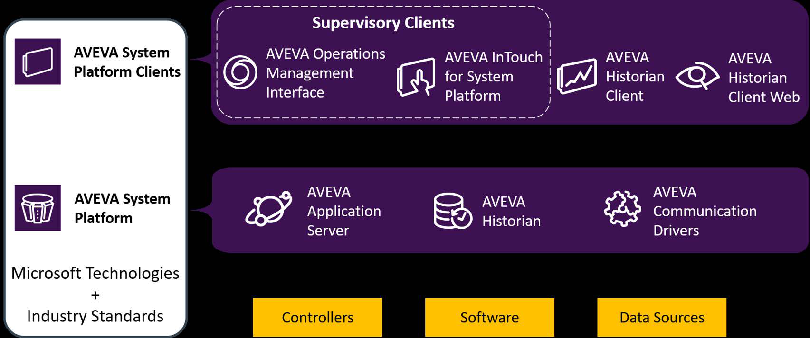
AVEVA System Platform architecture diagram showing the layered components: Controllers/Software/Data Sources at the bottom, AVEVA Application Server/Historian/Communication Drivers in the core infrastructure layer, and Supervisory Clients (Operations Management Interface, InTouch for System Platform) and Historian Clients at the top, all built on Microsoft Technologies and Industry Standards.
Servers, they also include legacy DA Servers and IO Servers. System Platform also communicates directly with third-party drivers, such as third-party OPC Server. System Platform clients include: Supervisory clients run the operator interface and provide real-time access to Application Server data, alarms, and events. There are two supervisory client products, based on different technologies. Both can coexist in the same System Platform solution. AVEVA™ Operations Management Interface has a rapid-design visualization framework with tools and provides out-of-the-box navigation to display content based on the application’s data model. AVEVA™ InTouch for System Platform is based on traditional development tools to create displays and the corresponding navigation framework from scratch. It is not included with AVEVA System Platform Enterprise. Supervisory client applications can be accessed remotely through a web browser with the use of AVEVA™ InTouch Access Anywhere. With InTouch Access Anywhere, you simply enter a URL in a web browser running on a desktop computer or mobile device and log on, without the necessity of having any separate client application installed on the portable device or desktop computer. AVEVA™ Historian Client is a collection of tools for accessing and reporting on data historized with Historian. This client includes a Trend application for plotting data on a graphical display, a Query application for constructing SQL queries through a point-and- click interface, and add-ins to Microsoft Excel and Word for generating reports. AVEVA™ Historian Client Web is a browser-based tool for quick data query, trending, and analysis of data historized with Historian. It provides an intuitive interface for easy access and use. Together, System Platform and its clients provide the core services needed to develop, implement, and deploy industrial automation applications. Some of these services include: Real-time data acquisition from field devices Scaling, statistics, and manipulation of data Process control Alarm triggering, logging, acknowledgment, and management Historization, trending, and analysis of process data Visualization of real-time process data Reporting Applications built on System Platform are extensible through the use of scripting within the product itself or through several available toolkits. For example, an application can access a third-party web service by means of a script.
systems. It is an open and extensible technology based on a distributed, object- oriented design. It leverages the Microsoft .NET Framework for the industrial automation world. ArchestrA provides the following system services: Object management for creating object-oriented applications A component object framework for application modeling of plants, factories, and equipment A common, global name space for all application types, from single-node to distributed networked applications Inter-process advanced communications with system maintenance and diagnostic information Centralized security services with support for multi-user environments for development and runtime Version management for every object in the application, including logging of development operations Most of these services are exposed, configured, and managed by Application Server. AVEVA™ System Platform Enterprise Overview AVEVA System Platform Enterprise builds upon the core technology of AVEVA System Platform to bring enhanced user accessibility and exclusive visualization extensions, specifically for enterprise users in assembling an AVEVA Unified Operations Center (UOC) solution. This includes the AVEVA Operations Management Interface (OMI) Web Client, allowing applications to be viewed in a standard web browser. AVEVA System Platform Enterprise is an AVEVA Flex subscription activated product. System Platform Enterprise Features Exclusive features of System Platform Enterprise include: A web client for Operations Management Interface (OMI) Additional web widgets ScatterChart widget Breadcrumb widget NavigationTree widget Hamburger widget TitleBar widget Graphic Repeater widget MapApp widget Additional OMI Apps Power BI OMI app PI Vision app Sankey app UOC documentation System Platform Enterprise does not include InTouch HMI (WindowMaker and WindowViewer), InTouch Web client, and InTouch Workspaces.
lab, you will create a Galaxy and connect to it using the System Platform IDE. Then you will import some prebuilt automation objects that represent a Mixer application and configure some of them. For example, you will configure platforms to work in a multi-node environment and an AppEngine to historize data to Historian. Once the Galaxy is created and configured, you will deploy it and use Object Viewer to verify that attributes are receiving data at runtime. The Galaxy you create in this lab will be used for the other labs in this course. Objectives Upon completion of this lab, you will be able to: Create a Galaxy Import objects into a Galaxy Deploy objects Verify data connections using Object Viewer
First, you will create a Galaxy based on the Blank Galaxy template and connect to it. 1. Open the System Platform IDE. The Galaxies dialog box appears.
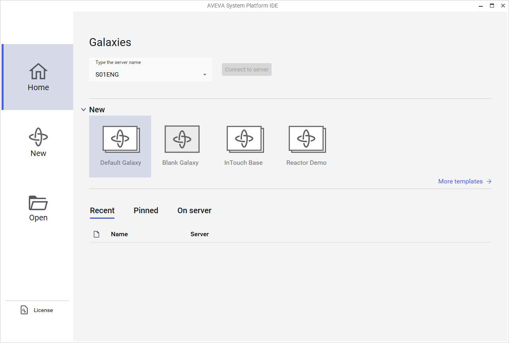
AVEVA System Platform IDE startup screen with the Galaxies dialog box. The Home tab is active, showing a server connection field (S01ENG), New Galaxy templates (Default Galaxy selected, Blank Galaxy, InTouch Base, Reactor Demo), and Recent/Pinned/On server tabs for existing projects.
2. In the New area, select the Blank Galaxy template. Note: Be sure to select the Blank Galaxy template. This will create a Galaxy that contains only base template objects. In later steps, you will import some prebuilt objects into your Galaxy. The Create Galaxy dialog box appears. 3. In Galaxy name, enter TrainingGalaxy. The Connect to this Galaxy option is checked by default.
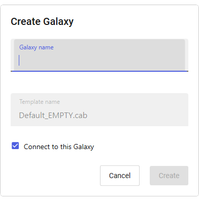
Create Galaxy dialog box with empty Galaxy name field, template set to Default_EMPTY.cab, and 'Connect to this Galaxy' checkbox checked. The Create button is disabled waiting for user input.
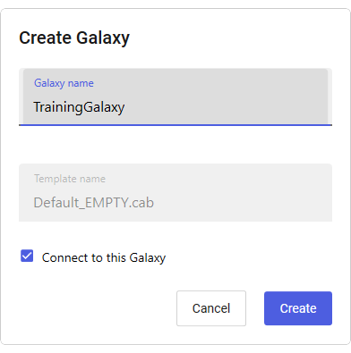
Create Galaxy dialog box with 'TrainingGalaxy' entered as the Galaxy name, Default_EMPTY.cab template selected, 'Connect to this Galaxy' checked, and the Create button now enabled (blue).
4. Click Create. The Create Galaxy dialog box shows the progress of the Galaxy creation process, as well as informational message details. This will take a few moments. It is important to review the messages shown in the Create Galaxy dialog box to make sure no errors occurred. When the Galaxy creation process indicates Successfully created TrainingGalaxy, the Close button becomes enabled.
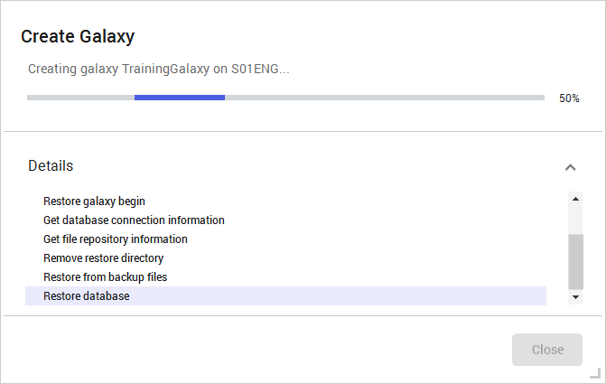
Create Galaxy progress dialog showing 'Creating galaxy TrainingGalaxy on S01ENG...' with a progress bar at approximately 50%. The Details section shows completed steps including Restore galaxy begin, Get database connection information, Get file repository information, Remove restore directory, and Restore from backup files. The Close button is grayed out while creation is in progress.
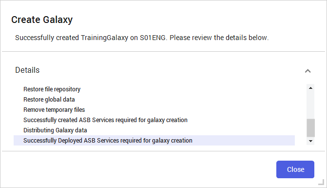
Create Galaxy success confirmation dialog showing 'Successfully created TrainingGalaxy on S01ENG.' The Details section lists completed steps including Restore file repository, Restore global data, Remove temporary files, Distributing Galaxy data, and Successfully Deployed ASB Services. The Close button is now enabled.
5. Click Close. After a few moments, the Galaxy opens in the System Platform IDE.
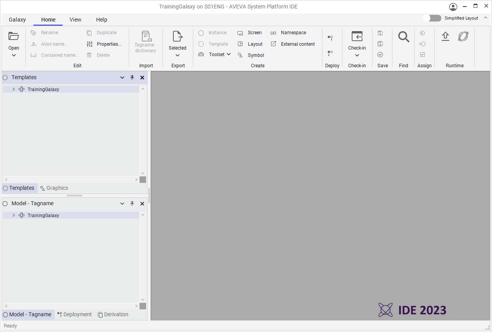
AVEVA System Platform IDE main workspace with TrainingGalaxy project connected to S01ENG server. The ribbon toolbar shows Home tab functions including Edit, Import/Export, Create Object Types (Instance, Template, Screen, Layout, Symbol), Deploy/Check-in. Left panes show Templates hierarchy and Deployment/Model-Tagnname hierarchy with TrainingGalaxy as root.
Next, you will import the prebuilt objects for the mixer application. You will use these objects for the rest of this lab and throughout this course. 6. On the ribbon, select the Galaxy menu, and then select Import | Objects | From package. Selecting the Galaxy menu opens the System Platform IDE backstage. The Import Objects from package dialog box appears. 7. Navigate to C:\Training and select Lab 1 - InTouch for System Platform 2023.aaPKG.
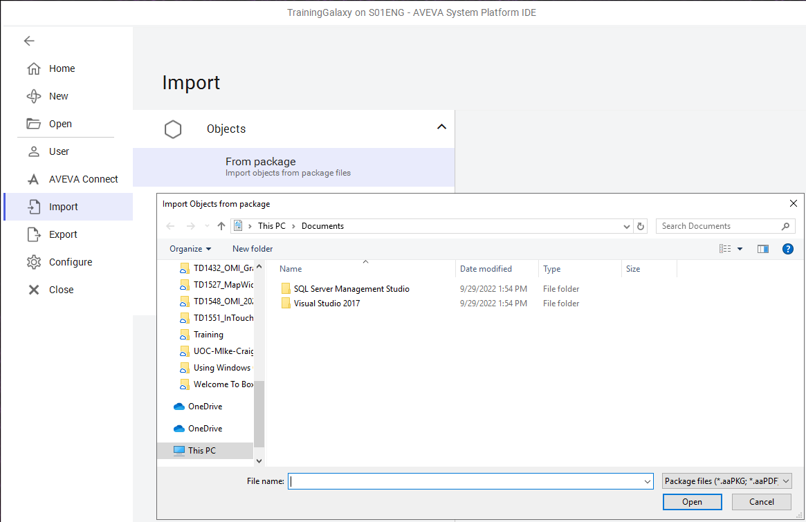
AVEVA System Platform IDE backstage Import menu with 'Objects > From package' selected. A Windows file dialog titled 'Import Objects from package' is open, currently showing the Documents folder with subfolders.
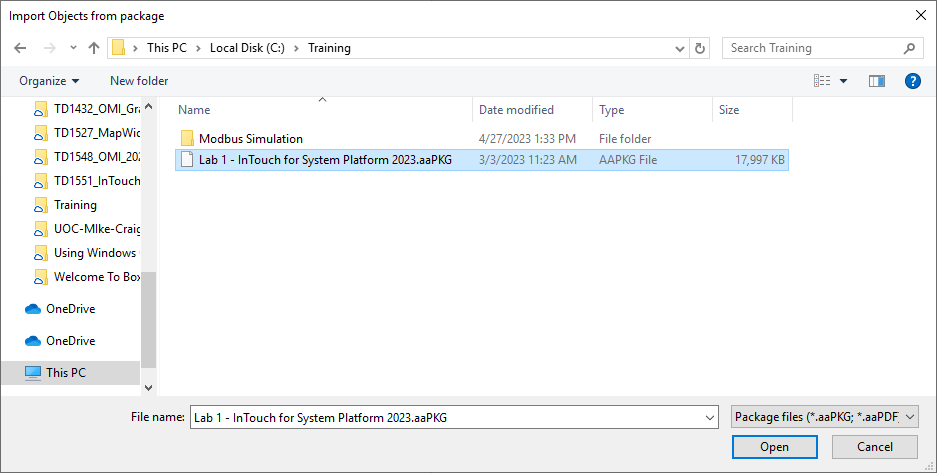
Windows 'Import Objects from package' file dialog navigated to C:\Training folder. The file 'Lab 1 - InTouch for System Platform 2023.aaPKG' (17,997 KB) is selected, with file type filter set to Package files (*.aaPKG; *.aaPDF).
8. Click Open to begin the import process. The Import preferences dialog box appears.
Import preferences dialog with three conflict resolution rules: (1) Same Tagname and Codebase: Overwrite if higher version; (2) Base Templates with different revision: Migrate; (3) Same Tagname but different Codebase: Skip. Also has 'Never overwrite unprotected with protected' checkbox checked. Cancel and Import buttons at bottom.
9. Leave the default import preferences and click Import. The Import Objects from package dialog box shows the progress of the import process, as well as informational message details. It is important to review the messages shown in the Import Objects from package dialog box to make sure no errors occurred. 10. When the import progress indicates Imported completed, click Close. 11. In the top-left corner of the backstage view, click the left arrow button to return to the main page of the System Platform IDE.
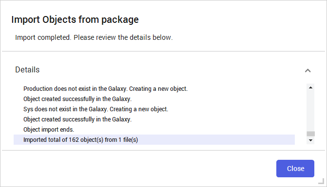
Import Objects from package completion dialog showing 'Import completed. Please review the details below.' The Details log shows object creation messages and summary: 'Imported total of 162 object(s) from 1 file(s)'. Close button available.
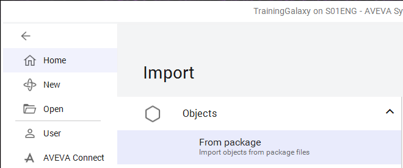
AVEVA System Platform IDE backstage Import menu view after import completion, showing Import > Objects > From package option with the left navigation sidebar including Home, New, Open, User, AVEVA Connect, Import (active), Export, Configure, Close.
Next, you will configure the network address for each platform. The engineering node (GRPlatform) will be used for project development and a production node (PROD_Platform1) will be used as a runtime environment for object deployment and testing. 12. In the Deployment view, expand TrainingGalaxy, and then double-click GRPlatform to open its configuration editor. 13. On the General tab, in the Network address field, enter the local computer name. Note: Your instructor will provide the node name of this computer. In the example below, S01ENG is shown as the computer name. 14. In the top-right corner of the window, click the Save and Close button.
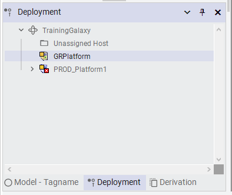
Deployment panel showing the hierarchy tree: TrainingGalaxy > Unassigned Host, GRPlatform (selected/highlighted), PROD_Platform1 (with red warning icon). Bottom tabs show Model-Tagname, Deployment (active), Derivation.
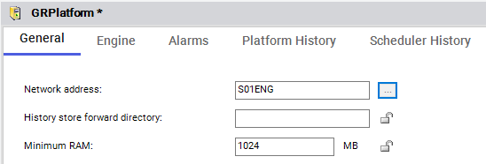
GRPlatform configuration editor with General tab active. Fields show Network address: S01ENG, empty History store forward directory, and Minimum RAM: 1024 MB. Asterisk in title indicates unsaved changes.
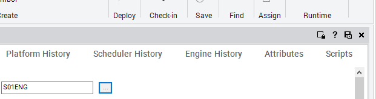
GRPlatform configuration editor showing the Engine History tab with attribute fields. The toolbar at top shows Deploy, Check-in, Save, Find, Assign, Runtime buttons. An S01ENG identifier is visible in a selector field.
Check-in dialog box appears. 15. In Comment, enter a comment. Note: Entering a comment in the Check-in dialog box is optional, but recommended. 16. Click Check-in. 17. In the Deployment view, double-click PROD_Platform1 to open its configuration editor.
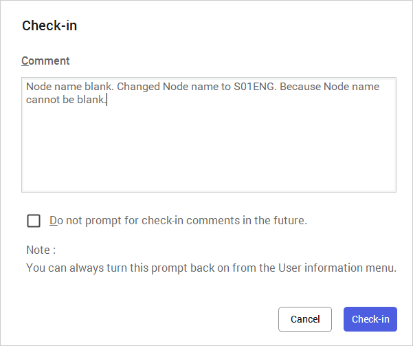
Check-in dialog box with a Comment field containing: 'Node name blank. Changed Node name to S01ENG. Because Node name cannot be blank.' Checkbox option to 'Do not prompt for check-in comments in the future' is unchecked. Cancel and Check-in buttons at bottom.
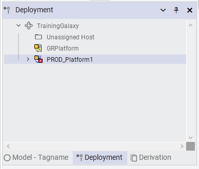
Deployment panel showing the hierarchy tree with PROD_Platform1 selected and expanded, showing its child AppEngine1. Bottom tabs show Model-Tagname, Deployment (active), Derivation.
18. On the General tab, in Network address, enter your designated production server computer name. Note: Your instructor will provide the node name of this computer. In the example below, S01PROD is shown as the computer name. 19. Save and close the PROD_Platform1 configuration editor, and then check in the object. Configure the Engine for Historian Next, you will configure the Historian connection for the application engine. 20. In the Deployment view, double-click AppEngine1 to open its configuration editor.
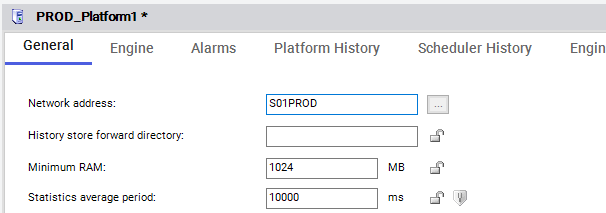
AppEngine1 configuration editor with General tab active. Settings include Engine startup type: Auto, Scan period: 500 ms, Enable storage to historian (checked), Enable Tag Hierarchy (checked), Historian node: S01ENG. Asterisk indicates unsaved changes.
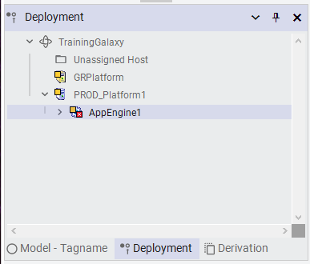
Deployment panel showing expanded hierarchy: TrainingGalaxy > PROD_Platform1 > AppEngine1 expanded to show Line1, Line2, Packaging, Plant, and ProdPLC1 nodes.
21. On the General tab, in Historian, enter the node name of the computer where Historian is installed. Note: Your instructor will provide the node name of this computer. In the example below, S01ENG is shown as the Historian node name. 22. Save and close the AppEngine1 configuration editor, and then check in the object. Configure the Data Source Next, you will configure the simulated data source for the mixers. This data source will be used throughout this course. 23. In the Deployment view, ensure AppEngine1 is expanded. 24. Double-click ProdPLC1 to open its configuration editor.
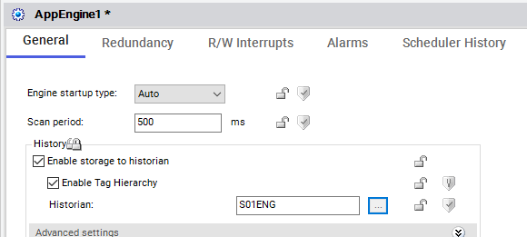
ProdPLC1 configuration editor with General tab active. Fields show Server node: S01PROD, Server name: MBTCP, Detect connection alarm (unchecked), and empty Priority field. Asterisk indicates unsaved changes.
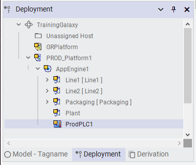
Deployment panel with expanded hierarchy: TrainingGalaxy > PROD_Platform1 > AppEngine1 > Line1 (with Mixer100, Mixer200, Mixer300, Mixer400), Line2. A right-click context menu is open on TrainingGalaxy showing options: Validate, Deploy..., Undeploy..., Upload Changes, Synchronize Views, Properties.
25. On the General tab, in Server node, enter the node name of the computer that will provide data to the Galaxy. Note: Your instructor will provide this information. In the example below, S01PROD is shown. 26. Save and close the ProdPLC1 configuration editor, and then check in the object. Deploy the Galaxy Now, you will deploy the Galaxy. 27. In the Deployment view, right-click TrainingGalaxy and select Deploy.
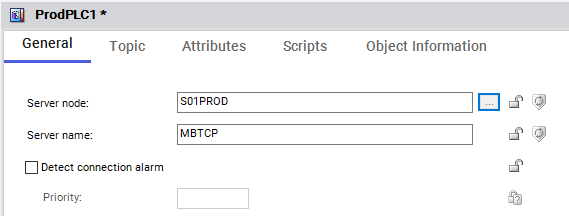
Deployment panel with right-click context menu open on TrainingGalaxy node. Menu options include Validate, Deploy..., Undeploy..., Upload Changes, Synchronize Views (Ctrl+Shift+Z), and Properties (Alt+Enter).
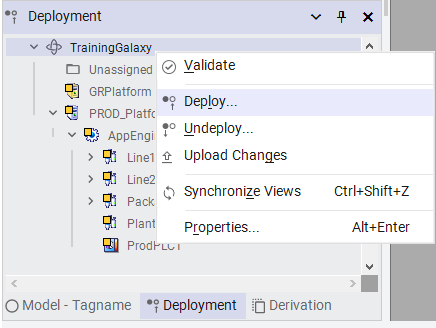
Deployment panel showing the full hierarchy with TrainingGalaxy expanded: GRPlatform, PROD_Platform1 > AppEngine1 > Line1 (Mixer100 selected/highlighted), Line2. Right-click context menu on Mixer100 shows: Set as Default, Export, Object Help..., View in Object Viewer (highlighted), Synchronize Views, Properties.
appears.
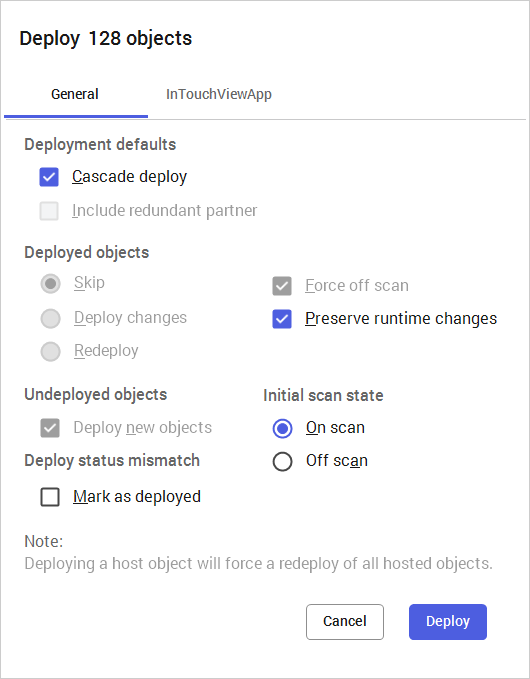
Deploy 128 objects dialog with General tab active. Deployment defaults: Cascade deploy checked, Include redundant partner unchecked. Deployed objects: Skip selected, Force off scan checked, Preserve runtime changes checked. Undeployed objects: Deploy new objects checked. Initial scan state: On scan selected. Note about deploying host objects forcing redeploy. Cancel and Deploy buttons.
28. Leave the deployment default settings and click Deploy. The Deploying Objects dialog box shows the progress of the deployment process, as well as informational message details. This will take a few moments. It is important to review the messages shown in the Deploying Objects dialog box to make sure no errors occurred. 29. When the deployment progress shows Deploy complete, click Close. Verify Data in Runtime Finally, you will verify the data in runtime by viewing the object attributes in Object Viewer. 30. In the Deployment view, expand the Line1 area, and then right-click the Mixer100 instance and select View in Object Viewer. Note: You can right-click any object in the Deployment view to open Object Viewer.
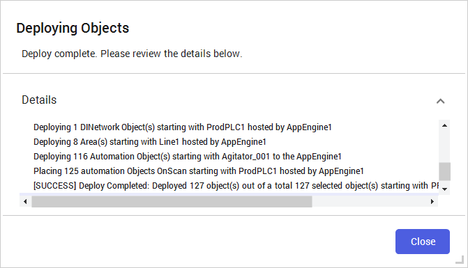
Deploying Objects progress dialog showing 'Deploy complete. Please review the details below.' The Details log shows deployment of DI Network Object, 8 Areas (Line1, etc.), 116 Automation Objects, and 125 objects placed OnScan. Final line: '[SUCCESS] Deploy Completed. Deployed 127 object(s) out of a total 127 selected object(s)'.
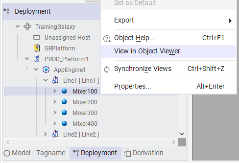
Deployment panel showing expanded hierarchy: TrainingGalaxy > PROD_Platform1 > AppEngine1 > Line1 with Mixer100 selected/highlighted, along with Mixer200, Mixer300, Mixer400. Right-click context menu on Mixer100 with 'View in Object Viewer' option highlighted.
appears, showing the list of attributes for Mixer100. 31. At the bottom of the window, right-click in the Watch List 1 pane and select Open. The Open dialog box appears.
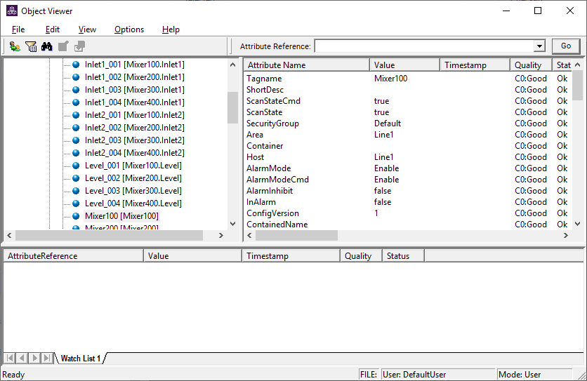
Object Viewer window showing attributes for Mixer100. Left pane lists objects (Inlet1_001, Inlet1_002, Level_001, Mixer100 selected). Right pane shows attributes table with Tagname: Mixer100, ScanStateCmd: true, ScanState: true, SecurityGroup: Default, Area: Line1, Host: Line1, AlarmMode: Enable, ConfigVersion: 1. All quality values show 'C0:Good'.
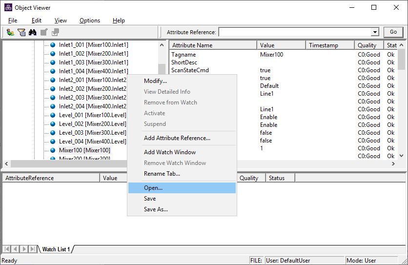
Object Viewer window with a right-click context menu open over the Watch List 1 pane at the bottom. The context menu shows options including Modify..., View Detailed Info, Remove from Watch, Activate, Suspend, Add Attribute Reference..., Add Watch Window, Remove Watch Window, Rename Tab..., Open... (highlighted), Save, Save As...
Knowledge Check
1. What are the key concepts covered in this lesson about Lab 1 – Creating and Deploying a Galaxy?
Click to reveal answer
Review the sections above for the main topics, step-by-step procedures, and important configuration details.
2. How does this topic relate to AVEVA System Platform?
Click to reveal answer
This is part of the InTouch HMI layer, which integrates with Application Server's Galaxy for a complete visualization solution.
Module 1 — Introduction. AVEVA InTouch for System Platform 2023 Training.
Next: Lesson 4 — Encrypted Communication + System Requirements